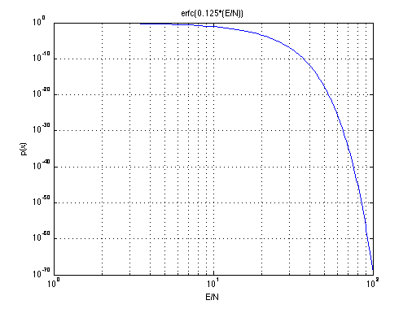
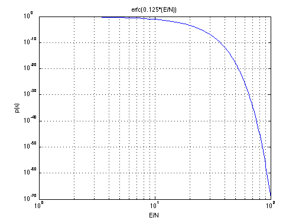

Error Function
Copyright 2007 Telecommunications Lab
E_N=[1:100]; p_e=erfc(.125*E_N); %p_e = 0.5 * erfc(0.5*E_N) loglog(p_e,'LineWidth',1.5); title('erfc(0.125*(E/N))') xlabel('E/N') ylabel('p(x)') grid on
Copyright 2007 Telecommunications Lab
E_N=[1:100]; p_e=erfc(.125*E_N); %p_e = 0.5 * erfc(0.5*E_N) loglog(p_e,'LineWidth',1.5); title('erfc(0.125*(E/N))') xlabel('E/N') ylabel('p(x)') grid on